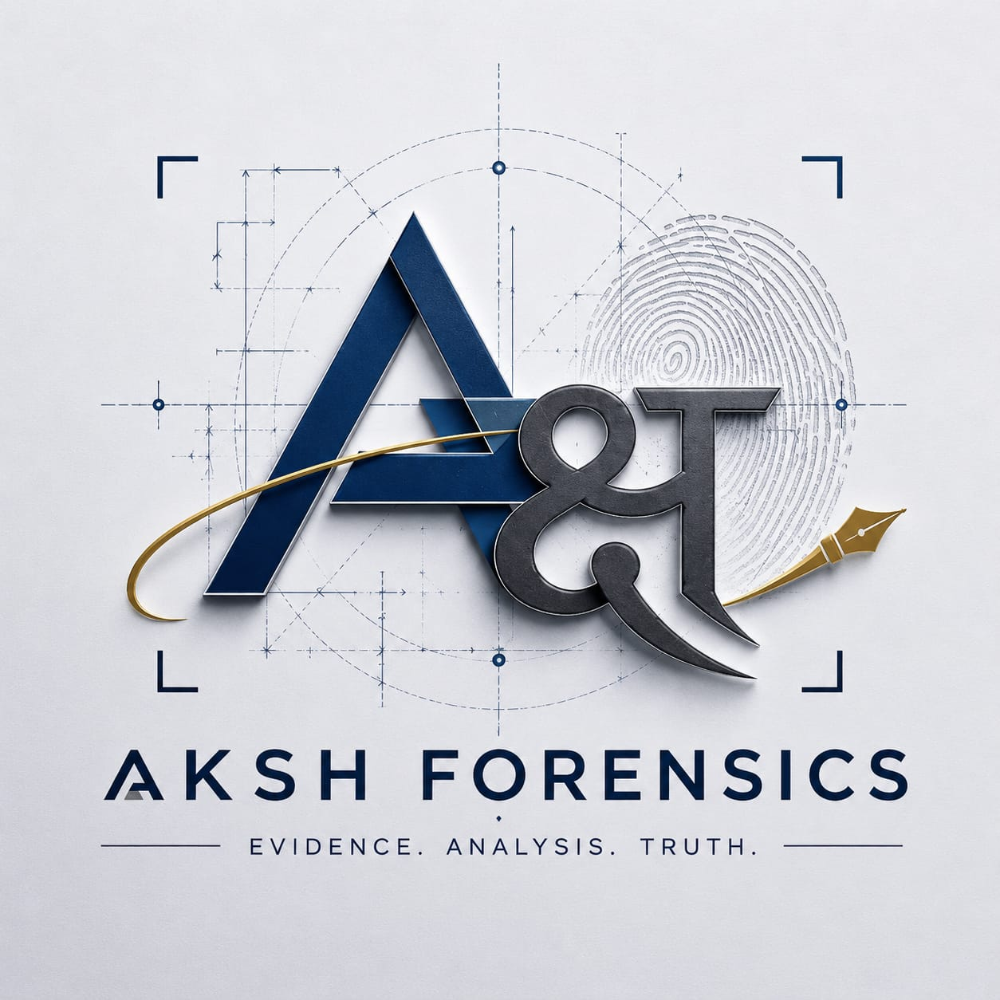

Independent forensic experts delivering court-admissible scientific analysis, evidence examination, and expert witness support across India
Documented, peer-reviewable protocols applied to every examination — repeatable and defensible.
Unbiased expert findings, free of influence — the science leads, not the brief.
Structured to evidentiary standards and ready for submission and cross-examination.
Sealed, logged, and traceable handling of every specimen from intake to testimony.
Field response and laboratory analysis coordinated across jurisdictions nationwide.
Strict confidentiality protocols protecting clients, parties, and case integrity.